Mobilya ve cihazlar
Odalarda neler durur. Mobilya yolu keser, bu yüzden etrafından dolaş; makineler yalnızca odalarında elektrik varken çalışır.
Mobilya
| Mobilya | Ne işe yarar | |
|---|---|---|
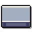 | Masa | Yolu kapatır. Üstünde eşyalar durur: yanında dur ve elindekini Masaya koy, ve zeminden gibi ondan Al. Masalar ayrıca kabul tezgâhlarını (bir yanda katip, öbür yanda halk için koltuğu olan bir tezgâh), uzun bir yemek masasını ve salonlardaki alçak masaları oluşturur. Kabul tezgâhları servis pencereleridir: her pencerede bir cam bölme ve bir sarmal kepenk. Arkasındaki koltukta biri oturdukça kepenk açıktır ve kimse oturmayınca kapanır; masayı çalıştıran onu elle de açıp kapatabilir (Kepengi aç, Kepengi kapat). Kapalı bir kepenk, halkın tezgâha bir şey koymasını, ondan bir şey almasını ya da üstünden uzanmasını engeller. |
 | Raf | Aletler ve malzemeler için duvara dayalı bir raf. Yolu kapatır ve bir masa gibi çalışır: Rafa koy, Al. |
 | Dolap | Yolu kapatır ve 8 benzer şeyden 40 yuvayı gözden uzak tutar. Yanında dur ve İçeriği görmek için Dolabı aç: her tür için bir satır ve kaç tane olduğu: birini almak için bir satıra dokun, İçine koy elindekini koyar (Hepsini koy öbür elinden ve sırt çantandan aynı türü ekler). İçini yalnızca sen görürsün ve uzaklaşınca kapanır. Kilitli bir dolabın ışığı vardır, onu açmayan kimlik kartı için kırmızıdır; yalnızca istediği erişime sahip, takılı ya da kullanılan elde tutulan bir kartla açılır. Açık dolabın listesindeki İçine saklan satırı seni içeri kapatır, kimse görmez; sen çıkana ya da biri açana kadar orada kalırsın. |
 | Tezgâh | Merkezde ve kamaraların ortak odasında oturmak için bir bank. Yanında dur ve Otur'a dokun: üstüne oturursun, kemerli. Üstünde hiçbir şey durmaz ve kimse oturmadan üstüne yürümez. |
 | Koltuk | Kayışlı bir sandalye, bir tabure, bir konsol koltuğu ya da tuvalet bölmesinde bir klozet; ya da yatılan mobilya: Ekip Odaları'nda bir yatak ya da ameliyat masası. Bir koltuğun yanında dur ve Otur'a dokun: üstüne geçip kemerli, koltuğun baktığı yöne bakarak oturursun. Yatak koltuk değildir: boş birine adım at (zemin gibi üstünden yürünür) ve Uyu'ya dokun, ya da ameliyat masasında Uzan'a dokun. Bir koltuk bir kişi alır. Kalkmak için Kalk'a dokun ya da boş bir adım at. |
 | Ekim tepsisi | Serada bir dikim tepsisi. Etkin elinde bir tohumla yanında dur ve Ek'e dokun; içinde genç bir bitki görünür, sonra ürüne göre 2 dakika ile 6 dakika sonra olgun biri ve Hasat onu toplar. Kendi suyunu, besinini, otlarını ve sağlığını tutar: satır için Tepsiyi kontrol et'e, bakmak için Sula, Gübrele, Ot ayıkla ve Tedavi et'e dokun. Kuru toprak, otlar ve lekeler onda görünür. Yolu kapatır. |
 | Ocak | Mutfakta bir pişirme istasyonu. Malzemeleri bir masa gibi üstüne koy, sonra Pişir'e dokun (listeden bir yemek seç, 6 ile 12 saniye, Şef için yarısı): malzemeler tükenir ve yemek ocağa iner. Tarifler: hasat karışımı (protein bloğu, patates ve soğan), protein tavası (protein bloğu ve fasulye), sebze güveci (havuç, patates ve soğan), mısır çorbası (mısır koçanı, patates ve soğan), domatesli pilav (pirinç ve domates), pirinç kasesi (pirinç ve fasulye), fasulye güveci (fasulye ve domates), mantar tavası (mantar ve soğan), patates çorbası (patates ve soğan), patates kızartması (2 patates), meyve kompostosu (elma ve pancar şekeri), domates çorbası (2 domates), pide (2 buğday), havuç salatası (2 havuç), soğan suyu (2 soğan) ve fırın patates (patates). Yolu kapatır. |
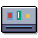 | Bar karıştırıcısı | Barın karıştırma makinesi. Malzemeleri üstüne koy ve elinde temiz bir bardakla Karıştır'a dokun (3 saniye, Barmen için yarısı): içecek bardağı doldurur, şeker ise karıştırıcıda kalır. Tarifleri: domates gazozu (domates), malt çayı (buğday) ve pancar şekeri (şeker pancarı). Soğutucusu buz kovasını da doldurur (Buz kovasını doldur). Yolu kapatır. |
 | Dolap | İki oda arasındaki duvara gömülü, kulplu ve küçük pencereli düz bir dolap. Bir dolap gibi çalışır (8 benzer şeyden 40 yuva alır; Dolabı aç, bir satıra dokunup birini al, İçine koy elindekini koyar) ama duvarın iki yanından da açılabilir, böylece bir oda onu doldurur, öbürü ondan alır. Üstündeki kilit, onu açmayan kartlar için kırmızı yanan bir ışık, adını verdiği erişimden bir kart ister, ya da birkaçından herhangi birini. |
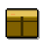 | Eşya | Dekor ve donanım: saksı bitkileri (duvara dayalı, köşede, pencerede ya da sırada durur; saksılar, ayaklı lambalar ve bayraklar dekor değil, taşıyabileceğin şeylerdir), kitaplıklar (kitapları ve yasa kitaplarını geri alır), bir kürsü, bayraklar ve Savunma Odası içinde bir faks makinesi. Bazı donanımlar kullanılır: ameliyathanenin alet tepsisi ve anestezi standı küçük şeyleri bir raf gibi alır, lavabolar (ameliyathane ve lavabo) elleri yıkar, Morg'un çekmeceleri açılır (Çekmeceyi aç: tepsi dışarı kayar; Cesedi tepsiye koy ölü bir bedeni üstüne yatırır, Birine yardım et baygın birini yatırır, İçine saklan seni içeri kapatır, Çekmeceyi kapat çekmeceyi kapatır; Cesedi çıkar içindekini yanındaki zemine yatırır) ve otopsi masası bir beden alır (Cesedi masaya yatır) ve Otopsi'ye dokunana özel bir rapor verir. Yolu kapatır; çevresinden yürü (harita her kapıyı ve odayı ulaşılabilir tutar). Bakım tünellerinde dekor yoktur: oradaki her donanım içinde eşyalar bulunan bir raf, dolap ya da depo sandığıdır. Zemin süslemeleri (halılar, kilimler, merkezin zemin kakması, İstasyon Şefi koltuğunun platformu, ameliyathanenin steril zemini, tünel kapısındaki dikkat şeritleri) yalnızca boyadır. |
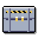 | Depo sandığı | Bakım tünellerinde, zemine sabitlenmiş, çelik bantlı ağır bir sandık. Bir dolap gibi çalışır (8 benzer şeyden 40 yuva alır; Sandığı aç, bir satıra dokunup birini al, İçine koy elindekini koyar, Sandığı kapat) ve asla kilitli değildir. İçini yalnızca sen görürsün ve uzaklaşınca kapanır. Her tünel cebinde bir ile üç raf, dolap ve sandık vardır; içlerinde farklı şeyler bulunur: el fenerleri, mumlar, yangın söndürücüler, ucuz eldivenler, kitaplar, kablo makaraları, plakalar ve aletler. Bir sandığa konan mum söner. |
| — | Torna | Makine Atölyesi'nin tornası. Üstüne plakalar koy (Tornaya koy, üstünde yatan her plaka sayılır), ona dokun, bir parça seç: pil hücresi (3 plaka, 20 saniye), invertör modülü (2 plaka, 15 saniye), bakır tel (1 plaka, 8 saniye), güneş paneli (4 plaka, 24 saniye), cıvatalar (1 plaka, 5 saniye), boru (2 plaka, 6 saniye), valf kiti (3 plaka, 10 saniye), pompa kiti (4 plaka, 14 saniye), havalandırma kiti (2 plaka, 8 saniye), temizleyici kiti (2 plaka, 8 saniye), rotor yatağı (2 plaka, 15 saniye), rotor contası (1 plaka, 10 saniye) ya da rotor fırçası (1 plaka, 5 saniye). İşten sonra parça tornada, alınmak üzere durur; gereken plakalar tükenir. Plakalar şimdilik ham metaldir (Madenci sonra cevher getirir). Yolu kapatır. |
| — | Sarım tezgâhı | Sarım tezgâhı, Elektrik Atölyesi'nde (Millrace İstasyonu'nda Trafo Odası'nda). Trafonun vinçle kaldırılıp buraya indirilen çekirdeği, burada bir bakır tel makarasıyla yeniden sarılır (Yeniden sar, 40 saniye). Yolu kapatır. |
Koltuklar ve eşyalar
 Sandalye
Sandalye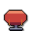
Tabure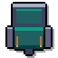
Konsol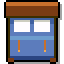
Yatak Tuvalet
Tuvalet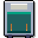
Masa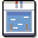
Banyo Sandık
Sandık Saksı bitkisi
Saksı bitkisi İlan panosu
İlan panosu Ranza
Ranza Üst üste kutular
Üst üste kutular Kablo makarası
Kablo makarası- Alet çantası
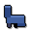
Kırık sandalye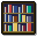
Kitaplık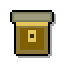
Kürsü Mumlar
Mumlar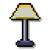
Ayaklı lamba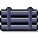
Borular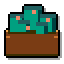
Saksılık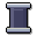
Sütun Ameliyat masası
Ameliyat masası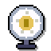
Ameliyat lambası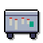
Alet tepsisi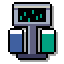
Anestezi sehpası Paravan perde
Paravan perde- Lavabo
 Morg çekmecesi
Morg çekmecesi Faks makinesi
Faks makinesi Evrak dolabı
Evrak dolabı- Bayrak
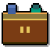
Büfe Gaz tankı
Gaz tankı Yalıtkan dizisi
Yalıtkan dizisi Soğutma fanı
Soğutma fanı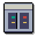
Ekipman dolabı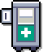
Otopsi masası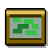
Kompost kutusu Kâğıt kutusu
Kâğıt kutusu Vana çarkı: Pompaların ve tank hatlarının yanında bulunan, boru ucundaki kırmızı bir el çarkı. Dekor: hiçbir şeyi çevirmez, santralin gerçek vanaları makinelerdir.
Vana çarkı: Pompaların ve tank hatlarının yanında bulunan, boru ucundaki kırmızı bir el çarkı. Dekor: hiçbir şeyi çevirmez, santralin gerçek vanaları makinelerdir. Boru rafı: Servis geçidi duvarı boyunca iki dikmede renk kodlu su, buhar ve gaz hatları. Dekor.
Boru rafı: Servis geçidi duvarı boyunca iki dikmede renk kodlu su, buhar ve gaz hatları. Dekor.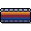
Kablo kanalı: Kablonun bir duvar boyunca gittiği yerde, bir demet kablo taşıyan merdiven tipi bir kanal. Dekor: gerçek kablolar, kat planındakilerdir. Sigorta kutusu: Bir atölyenin ya da servis geçidinin duvarında bir sigorta kutusu. Dekor: bir odanın elektriği panelinden açılıp kapanır.
Sigorta kutusu: Bir atölyenin ya da servis geçidinin duvarında bir sigorta kutusu. Dekor: bir odanın elektriği panelinden açılıp kapanır. Vardiya panosu: Günün nöbetlerini üç sütunda sıralayan bir kara tahta. Dekor.
Vardiya panosu: Günün nöbetlerini üç sütunda sıralayan bir kara tahta. Dekor.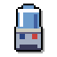
Su sebili: Bir koridorda ya da dinlenme köşesinde, şişeli bir su sebili. Dekor. Askılık: Islak odalara açılan bir kapının yanında, üzerinde bir palto, bir kasket ve bir şapka asılı kancalı bir pano. Dekor.
Askılık: Islak odalara açılan bir kapının yanında, üzerinde bir palto, bir kasket ve bir şapka asılı kancalı bir pano. Dekor. Dolap sırası: Üç uzun çelik dolaptan oluşan bir sıra. Dekor: teçhizat tutan dolaplar, çekmeceli dolaplardır.
Dolap sırası: Üç uzun çelik dolaptan oluşan bir sıra. Dekor: teçhizat tutan dolaplar, çekmeceli dolaplardır. Islak paspas: Islak bir odanın kapısının içine serilmiş, sarı kenarlı bir lastik paspas. Düz: üstünde yürünür.
Islak paspas: Islak bir odanın kapısının içine serilmiş, sarı kenarlı bir lastik paspas. Düz: üstünde yürünür.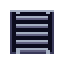
Gider ızgarası: Islak bir odanın zemininde demir bir gider ızgarası. Düz: üstünde yürünür. Gelgit saati: Kadranında gelgiti anlatan bir dalga olan yuvarlak bir saat. Dekor.
Gelgit saati: Kadranında gelgiti anlatan bir dalga olan yuvarlak bir saat. Dekor. Müzik kutusu: Barda, ışıklı bir kemeri olan bir müzik kutusu. Dekor.
Müzik kutusu: Barda, ışıklı bir kemeri olan bir müzik kutusu. Dekor.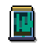
Yosun kavanozu: Botanik tankından yeşil yosun dolu bir cam kavanoz. Dekor. Gösterge duvarı: Pompalar ve tanklar için altı kadranlı bir panel. Dekor.
Gösterge duvarı: Pompalar ve tanklar için altı kadranlı bir panel. Dekor. Harita masası: Kıyının haritası ve kırmızıyla çizilmiş bir rota olan bir masa. Dekor.
Harita masası: Kıyının haritası ve kırmızıyla çizilmiş bir rota olan bir masa. Dekor.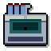
Numune lavabosu: Bir laboratuvarda, numune tüpü rafı olan çelik bir lavabo. Dekor.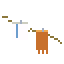
Kurutma ipi: Zeminin üstüne asılmış bir çamaşır ipi (bir havlu, bir eldiven). Düz: tavandan sarkar ve altından geçilir. Hamak: İki kanca arasına gerilmiş, içinde bir battaniye olan bir hamak. Dekor.
Hamak: İki kanca arasına gerilmiş, içinde bir battaniye olan bir hamak. Dekor.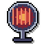
Isıtma lambası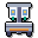
Serum sehpası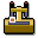
Musluk: Barda, damlalığın üstünde pirinç bir musluk. Yanında boş bir bardak tutup Musluktan doldur'a dokun: bardak Omurga Köpüğü ile dolar. Hiç tükenmez.
Oturaklar sandalye, tabure, konsol koltuğu ve banklardır: Köprüüstü'nün konsol koltukları, holün ve mutfak tezgâhının sandalyeleri, bankları ve tabureleri, Revir'in ve ambarın masaları, bir de ekibin eve dönüş aracının (Heron'da mekik, Millrace'de denizaltı, Cairn'de uçak) kayışlı koltukları. Hiçbiri servis geçitlerinde değil.
Bir koltuğun yanında dur ya da boş bir koltuğa çık ve Otur'a dokun (düğme, elindeki aletin ve erişimdeki konsolların düğmelerinden sonra gelir). Karosuna geçersin ve koltuğun yönünde kayışlı oturursun; seni gören herkes oturduğunu görür. Oturmak zaman almaz ve hiçbir şey işini engellemez. Kemerli biri yerinde kalır ve yer çekimsiz bir istasyonda yüzmez. Bir koltuk bir kişi alır.
Kalkmak için boş herhangi bir yöne yürümen yeter (Ayağa kalk düğmesi de aynısını yapar ve seni durduğun yere geri koyar). Kimsenin oturmadığı koltuğun üstünden zemin gibi yürünür, bu yüzden sandalyeler odayı asla kapatmaz; yalnızca birinin oturduğu koltuk yolu kapatır.
Cihazlar
| Cihaz | Ne yapar | |
|---|---|---|
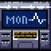 | Ekip monitörü | Bildirimde bulunan her kıyafeti, sahibinin sensörleri ne kadarını söylemeye ayarladıysa o kadarıyla listeler: canlı ya da ölü, sağlık, nerede. Revir'de. |
 | Güç monitörü | Dizileri, pil bankasını, yükü ve hangi odalarda elektrik olduğunu, diğerlerinde neden olmadığını gösterir. |
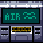 | Atmos konsolu | Atmosfer konsolu. Hava alarmı olan her odayı, en kötüsü önde, neyin ters gittiğiyle listeler; kartı için bir odaya dokun. Herhangi bir mühendis buradan bir odaya Panik ya da Normal gönderebilir, ya da tüm kırmızı odalara Panik (10 saniye bekleme). Bir odanın havası sorundayken haritada kırmızı yanıp söner. Yalnızca odasında elektrik varken çalışır. |
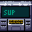 | Tedarik konsolu | İstasyonun tedarik puanlarını gösterir. Burada herkes bir eşya isteyebilir; talep, biri onaylayana (eşyanın bedeli harcanır), reddedene ya da isteyen geri çekene kadar listesinde bekler. Buradaki platformu göndermek, teslimat platformundaki boş sandıkları tedarik puanı karşılığında gönderir. |
 | Talep konsolu | Burada herkes bir eşya isteyebilir. Talep, Ambar Görevlisi onaylayana ya da reddedene, ya da isteyen geri çekene kadar sipariş konsolunun listesinde bekler. Taleplerine ne olduğunu gösterir: onaylandı ve yolda, platforma indi ya da reddedildi. Tedarik puanı göstermez. |
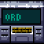 | Sipariş konsolu | Ambar için: ambar erişimi gerekir. İstasyonun tedarik puanlarını ve bekleyen talepleri gösterir. Birini onaylamak eşyanın bedelini harcar ve burada bir sipariş formu basar; reddetmek listeden çıkarır. Buradaki platformu göndermek, teslimat platformundaki boş sandıkları tedarik puanı karşılığında gönderir. Tezgâhta çalışan burada da bir eşya talep edebilir; fiyatlar gösterilir. |
 | Kimlik konsolu | Kimlik konsolu, masanın Sicil Memuru'nun tarafında (katı bir aygıt; yalnızca odasında elektrik varken çalışır). Kendi kimlik kartı komuta erişimi olan biri (İstasyon Şefi'nin ya da Sicil Memuru'nun), takılı ya da çalışmadığı elde tutulan, değiştirilecek kimlik kartını etkin elinde tutar, konsolun yanında durur, Kimlik konsolu ve Kimlik kartı tak'a dokunur, sonra listeden bir görev seçer, açık görevler önde: Ata |
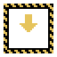 | Teslimat platformu | Siparişler burada bir sandıkta iner, eşyalar çıkarılana dek isteyenin adıyla işaretli. Onları çıkar ya da sandığı ambar arabasına yükle ve teslim et. Burada duran boş sandıklar tedarik konsolundan gönderilebilir; istasyonun kendi eşyaları kalır. |
 | Evrak dolabı | Mühürlü sipariş formlarının dosyalandığı yer: her biri 2 tedarik puanı. |
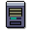 | Erzak dağıtıcısı | Rasyon paketlerinin bir duvar dağıtıcısı: yanında dur ve Rasyon al'a dokun. Her kişiye 90 saniyede bir paket verir (açlık göstergesine yüzde 35 ekler), Şef olsun olmasın, böylece hiç kimse aşçı yok diye açlıktan ölmez. Yalnızca odasında elektrik varken çalışır. |
 | İş panosu | İş panosu, merkezin bilgi duvarına asılı bir mantar pano (bir duvar karosu: kimse üstüne yürümez). Yanında dur ve İş panosu'na dokun: bu vardiyadaki görevlerin tek listesi ve her birinde kaç kişi olduğu (kimsenin tutmadığı görev açık diye işaretlenir; yalnızca sayılar, asla adlar), vardiyada kalan süre ve ekibin eve dönüş aracının nerede olduğu. Sicil Memuru'nun duyuru satırı, bir Sicil Memuru bir tane yazabildiğinde listeyi bitirecek (#68); o zamana dek satır yok. Yalnızca odasında elektrik varken çalışır; elektriksizken karanlıktır. |
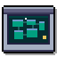 | Taktik masa | Köprü konsolu, köprünün ortasındaki taktik masa: bir masanın üstünde istasyonun hologramı. Yanında dur ve Taktik masa'ya dokun: önce istasyonun alarm seviyesi (yeşil, mavi ya da kırmızı, kendi renginde), sonra kaç odada elektrik var, kaç hava alarmı çalıyor, tedarik ve pil, eve dönüş aracı ve birinin gerektiği her oda için bir satır (kesik, kapalı, elektrik yetersiz, kötü hava). Herkes okur. Alarm seviyesini yalnızca İstasyon Şefi'nin kartı belirler (İstasyon Şefi ayakta değilken bir Nöbet Görevlisi yeşili maviye yükseltir) ve İstasyon Şefi'nin emirlerini verir, her birinin bekleme süresi vardır: Alarm seviyeleri bölümüne bak. Elektriksizken karanlıktır. |
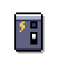 | Oda elektrik paneli | Bir odanın elektriğini açar ve kapatır, bir kaynağın beslediği bir kabloya bağlı olup olmadığını gösterir. |
 | Pencere | Bir dış duvarda bir cam: yıldızlar görünür. Gövdenin bir parçasıdır. |
 | Kafes kirişindeki güneş paneli | Gövdenin dışında, kafes kirişinde bir güneş dizisinin tek bir paneli. Tozlanır, çatlar ve değiştirilebilir. |
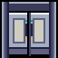 | Kapı | Doğru erişimli bir kimlik kartına kayarak açılır; üstündeki renkli bant kapının kime ait olduğunu söyler. Koyu bir çerçevede orta yerinde bir derz olan soluk bir kanat: kapalıyken tam bir kanat, açıkken zeminin göründüğü bir çerçeve. |
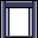 | Kapı, açık | Doğru erişimli bir kimlik kartına kayarak açılır; üstündeki renkli bant kapının kime ait olduğunu söyler. Koyu bir çerçevede orta yerinde bir derz olan soluk bir kanat: kapalıyken tam bir kanat, açıkken zeminin göründüğü bir çerçeve. |
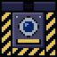 | Hava kilidi kapısı, iç | Geniş sarı-siyah bir çerçevede, yuvarlak bir lumbozlu bir basınç kapısı. Üstündeki ışık, mühürlüyken ya da sürgülüyken ya da açmak boşluğu, denizi ya da soğuğu içeri alacakken kırmızı; oda döngüdeyken kehribar; güvenliyken yeşildir. Yanındaki duvarda bir şablon, odanın adını verir (Hava Kilidi, Windlock, Dalış Kilidi, Dalış Havuzu, eve dönüş aracının kapısında ise Ekip Mekiği, Ekip Denizaltısı ya da Ekip Uçağı). İç ve dış kapının şeritleri ters yöne yatar. |
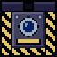 | Hava kilidi kapısı, dış | Geniş sarı-siyah bir çerçevede, yuvarlak bir lumbozlu bir basınç kapısı. Üstündeki ışık, mühürlüyken ya da sürgülüyken ya da açmak boşluğu, denizi ya da soğuğu içeri alacakken kırmızı; oda döngüdeyken kehribar; güvenliyken yeşildir. Yanındaki duvarda bir şablon, odanın adını verir (Hava Kilidi, Windlock, Dalış Kilidi, Dalış Havuzu, eve dönüş aracının kapısında ise Ekip Mekiği, Ekip Denizaltısı ya da Ekip Uçağı). İç ve dış kapının şeritleri ters yöne yatar. |
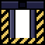 | Hava kilidi kapısı, açık | Geniş sarı-siyah bir çerçevede, yuvarlak bir lumbozlu bir basınç kapısı. Üstündeki ışık, mühürlüyken ya da sürgülüyken ya da açmak boşluğu, denizi ya da soğuğu içeri alacakken kırmızı; oda döngüdeyken kehribar; güvenliyken yeşildir. Yanındaki duvarda bir şablon, odanın adını verir (Hava Kilidi, Windlock, Dalış Kilidi, Dalış Havuzu, eve dönüş aracının kapısında ise Ekip Mekiği, Ekip Denizaltısı ya da Ekip Uçağı). İç ve dış kapının şeritleri ters yöne yatar. |
Gövde
Dış duvarlar aşamalı yıpranır; bkz. Olaylar.
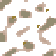
Yıpranmış kaplama: kaplamanın ince olduğu yerde bir leke. Çatlak kaplama: ince bir çatlak ve küçük bir sızıntı.
Çatlak kaplama: ince bir çatlak ve küçük bir sızıntı. Gövdede bir delik.
Gövdede bir delik.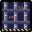
Kaplaması sökülmüş: çerçeve çıplak.